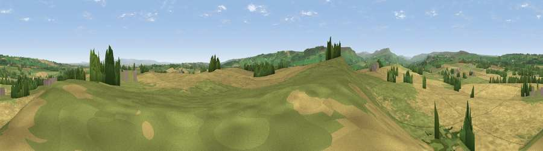

Viewpoint near Constable Burton
#10596 in England · top 17% of its area beats it · near Constable Burton · access?Where it is
The exact computed spot (SE 16175 89175). Click the marker for map links.
Public access: no public right of way or access land is recorded at this exact spot — it may be on private land. Computed from Natural England's CRoW access layer and OpenStreetMap rights of way — not the legal definitive map. Always verify locally.
The view, rendered

A 360° render of this exact spot computed from the terrain model, tree cover and land cover — summer colours, afternoon light, calibrated against photographs of famous viewpoints. Real trees, hedges and buildings will differ in detail.
The panorama
Grey silhouette: terrain skyline in each direction (720 bearings, Earth curvature and refraction included). Dashed green: skyline with trees (+15 m) and buildings (+8 m) as obstacles. Blue strip: how far the ground is visible on each bearing.
Where the view opens
Wedge length = distance to the farthest visible ground on that bearing (vegetation-aware). Rings at 10, 25 and 50 km.
What fills the view
53% cropland · 41% grassland · 5% woodland ·
Angular shares of the visible panorama (visual magnitude), not map area. Landscape diversity 0.38 (0–1 Shannon).
Key numbers
More beautiful places nearby
The staircase of upgrades: each row has a higher view potential than everything closer. Driving times are estimates from straight-line distance, calibrated against real road routing — check an actual route before setting out.
| Place | Direction | Drive | Score |
|---|---|---|---|
| Sugar Hill | SW · 0 km | ~1 min | 64.5 |
| Viewpoint near East Witton | SSW · 5 km | ~11 min | 77.8 |
| Viewpoint near Kirby Knowle | E · 29 km | ~46 min | 80.5 |
| Beacon Hill | ENE · 32 km | ~49 min | 84.7 |
| Carlton Bank | ENE · 38 km | ~57 min | 85.1 |
| Roseberry Topping | ENE · 48 km | ~68 min | 85.8 |
| Viewpoint near Lazenby | NE · 50 km | ~71 min | 86.4 |
| Warsett Hill | ENE · 62 km | ~85 min | 86.8 |
54.29794, -1.75297 · source: screening · position refined by local search. Computed location — check access rights before visiting.